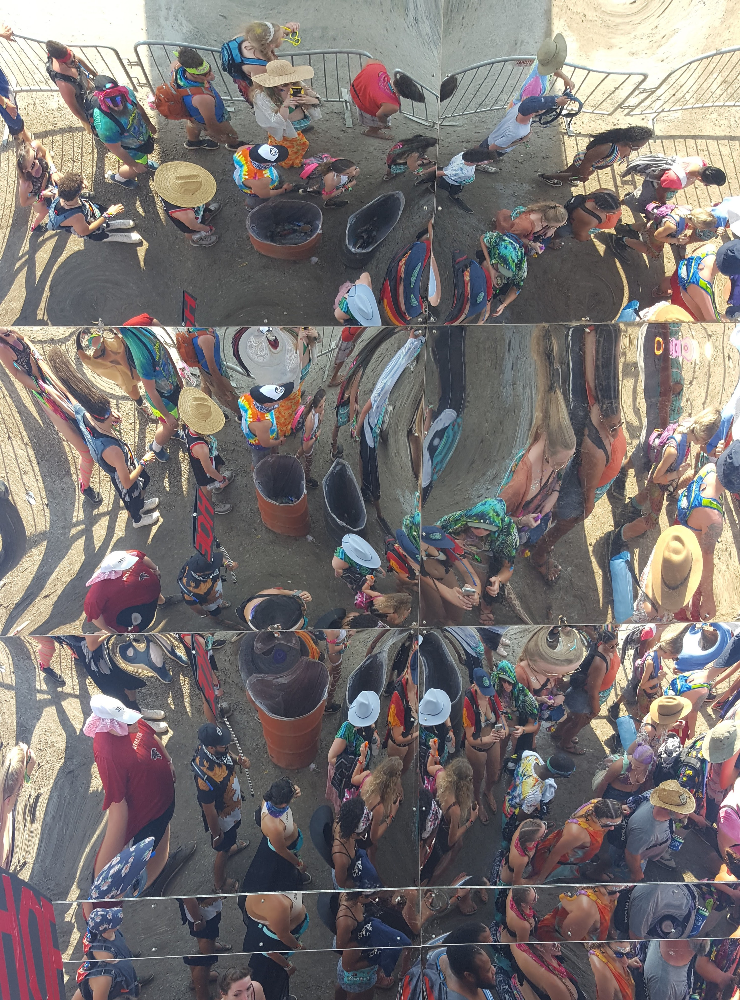
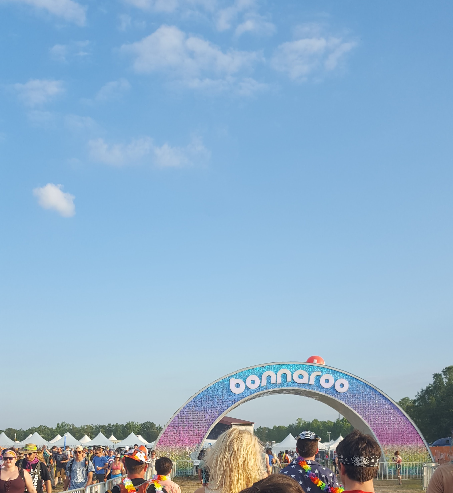
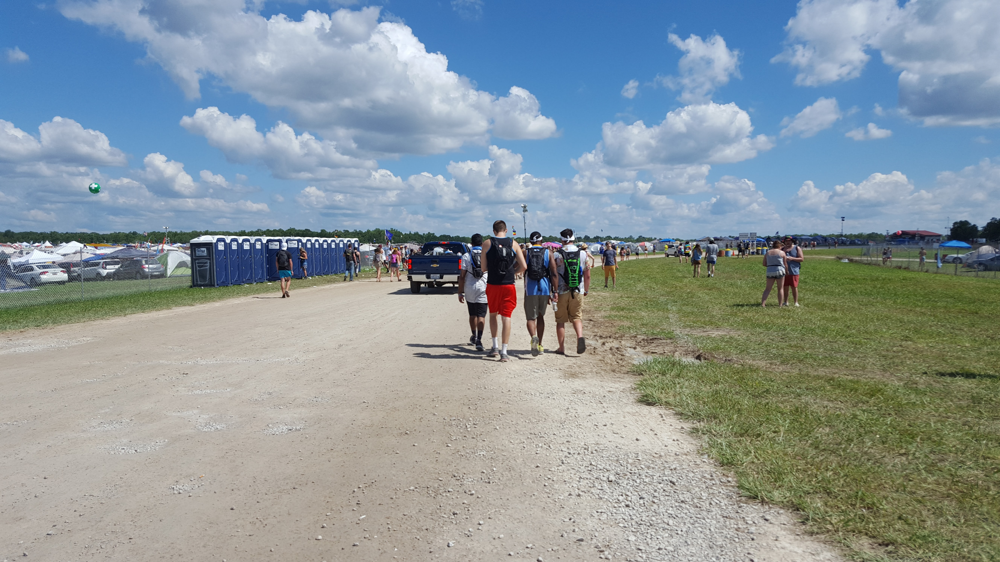
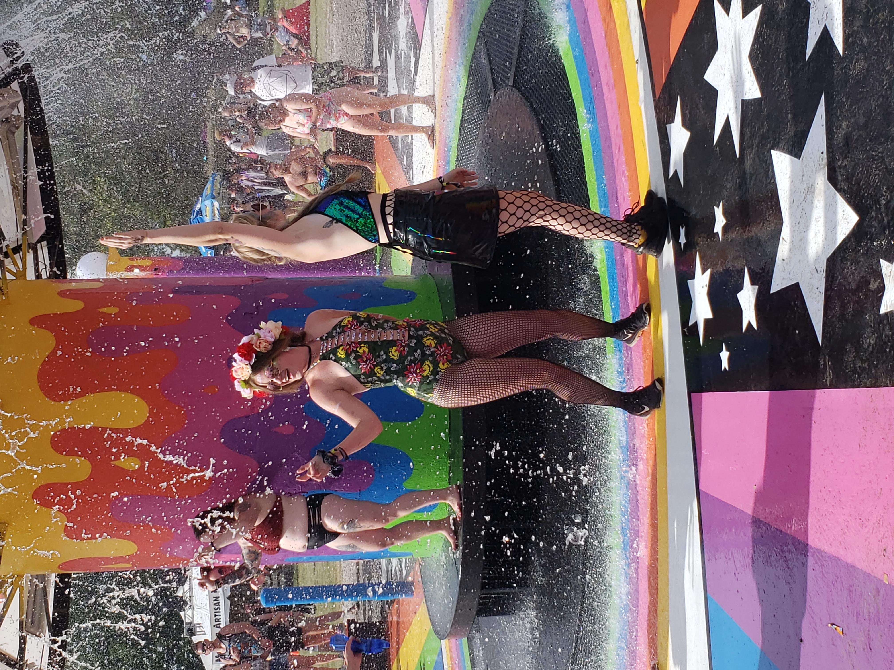

Items Allowed and Prohibited
Some things that are allowed in the festival is the following: Camping grill, small generator, instruments, specific tools, totems “less than 7 feet tall, and less than 1 inch in diameter. Must be made of light material: swim noodles, foam type material, cardboard tubes, fabric, light plastic, balloons, aluminum and/or blow up items”, cooling devices, food and drink, and a specific amount of alcohol per person.
Things that are not allowed in the festival at all are: Glass, wood fires, kegs, weapons, drones, fireworks, illegal substances, transportation device (unless health requires), glowsticks, pets, vending unless a vendor, power tools
Some things are specific to Centeroo, like outside food and drink is no longer allowed in Centeroo, like spray on sunscreen, blow-up couches, and certain bags. There is a whole list on the Bonnaroo website!
Bonnaroo - Allowed & Prohibited Disability Accommodations
Bonnaroo is open to everyone, and that includes people with specific needs! As it could still improve, there are things like shuttles and carts with wheelchair lifts, as well as well-graded ramps around the festival. There are accessible bathrooms that easily fit a wheelchair at every set of potties and in the permanent bathrooms. Some potties are even fenced off so it is more easily accessible. There are paved roads and cleaned paths. There are even staff that can help walk through even more accommodations before the festival. All that is needed is ID proof with government documentation! There is also a support email to reach out to with any concerns.
  Bonnaroo - AccommodationsTotems and Fashion!
Totems can look like whatever you want! It’s just something fun that represents you as a person, within reasoning. Not too big to potentially hurt someone or cover their view, but enough to get someone’s attention and make their day through connection. Now, there are obviously whole fashion trends around festival wear. Bonnaroo is so diverse in its fashion, as long as it isn’t hurting anyone in any way then why not? Express yourself! Through a totem as well, it’s so fun to go all out and is a great way to connect with strangers that are doing the same. I have found that I enjoy wearing mostly swimsuits, since there is a giant mushroom fountain I enjoy getting under to cool off, as well as a giant water slide. Quick drying clothing like cotton or compression fabric can really help with chafing, along with deodorant or baby powder. Tops made for dancing are a great way to allow yourself to move freely and dance how you want to your favorite artists!
Bonnaroo - FAQ's 